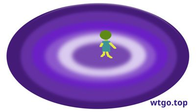

What would a person be like if they lived alone in a spaceship for 50 years?
After 50 years of social isolation, even with spiritual companionship such as books and entertainment, a person would become alienated:
Sensory deprivation effect: The monotonous environment leads to a sense of confusion about time, the illusion of time dilation/compression, and a scattered attention.
Emotional dullness and alexithymia: With no one to empathize with for a long time, one will gradually lose the ability to recognize and express complex emotions.
Hallucinations and paranoia: When isolated for too long, it is common to imagine sounds, form a strong projective attachment to objects, and treat objects as "people" or even "family members".
Depersonalization and weakened sense of reality: One may not be able to distinguish between true and false memories, or start to regard past life on Earth as a "dream".
Cognitive rigidity or reconstruction: Some people develop an extreme philosophical or religious inner world, while others fall into depressive stupor.
Result: There is a very high probability of severe loning-related mental disorders occurring. A few "adaptors" will become highly introspective but emotionally different from the average person.
Thu May 28 07:49:33 AM UTC 2026
Boost Quickbook
https://www.boost.org/doc/libs/latest/doc/html/quickbook.html
wtgo.top
https://wtgo.top